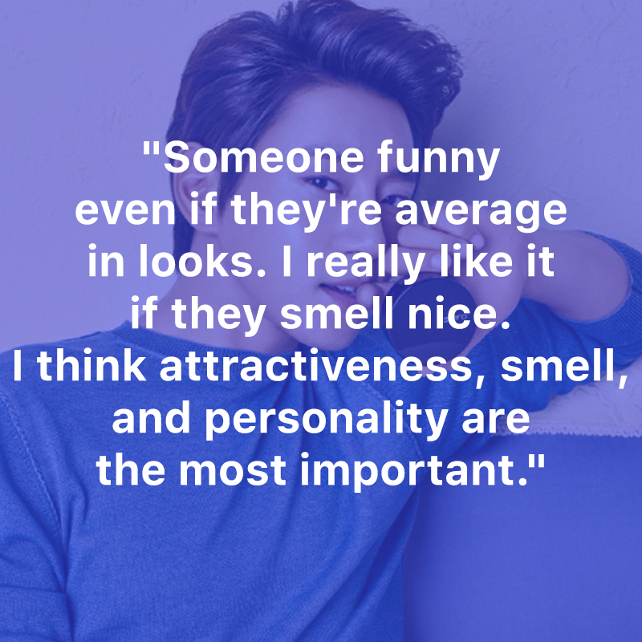
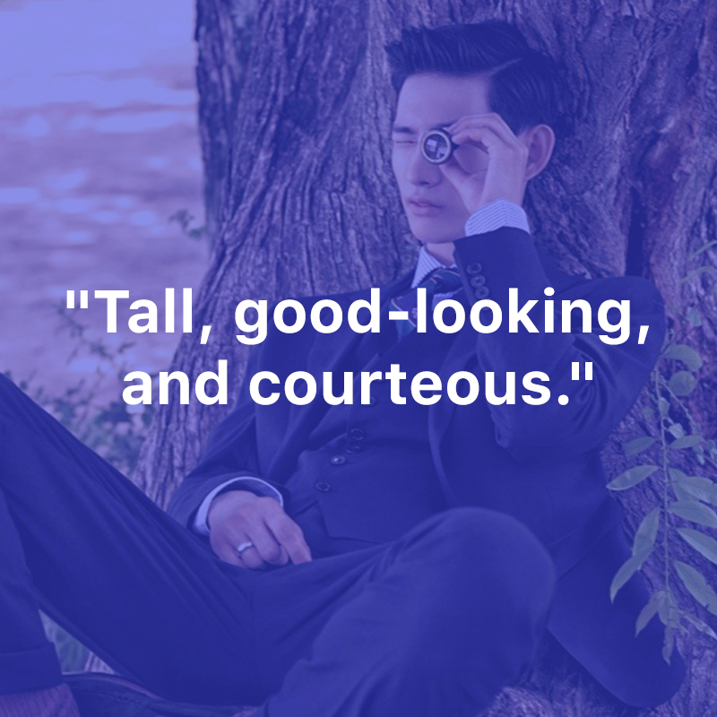
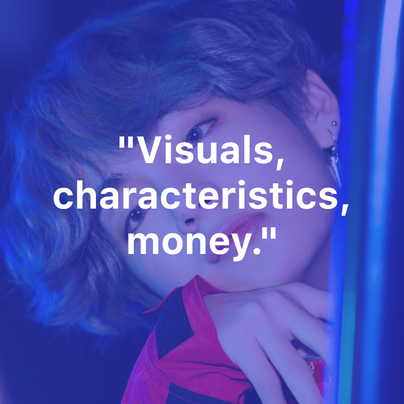
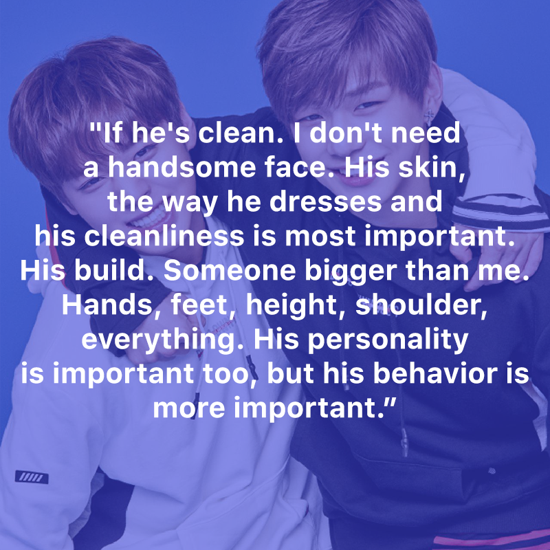
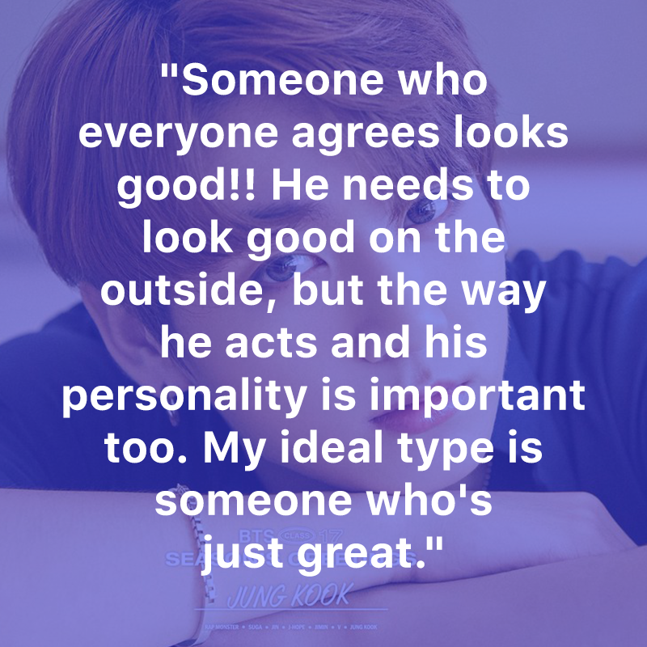
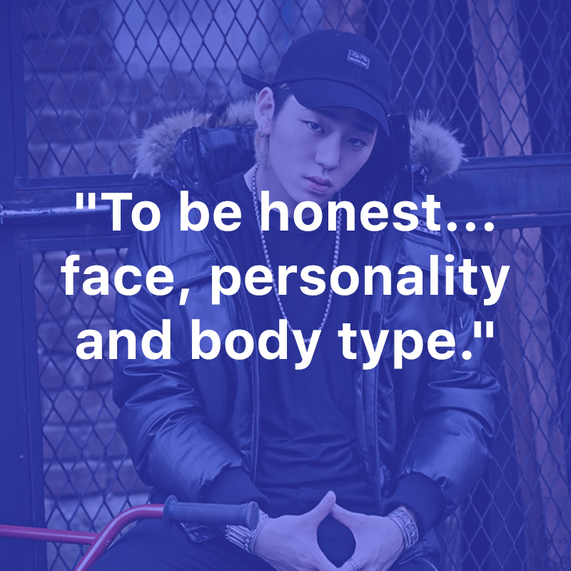
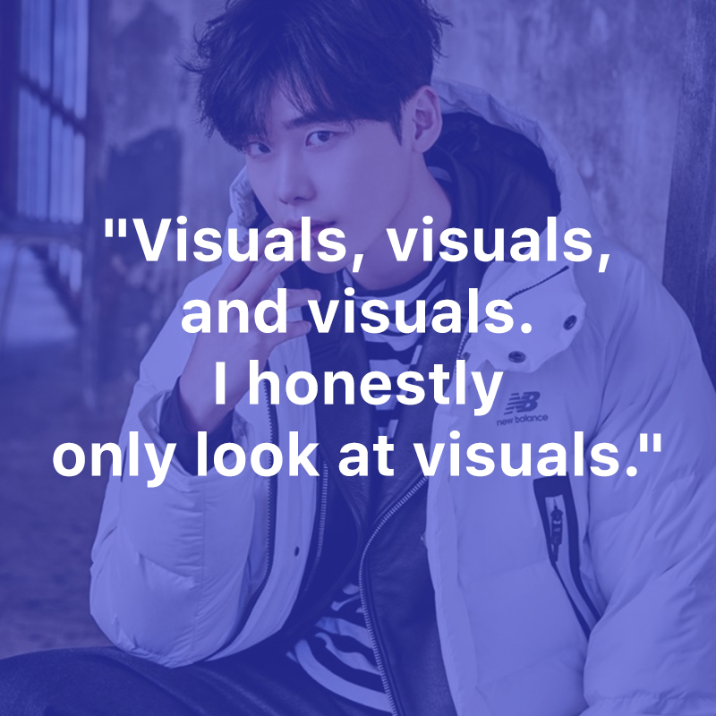
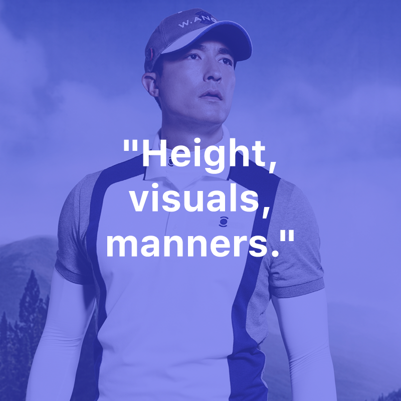
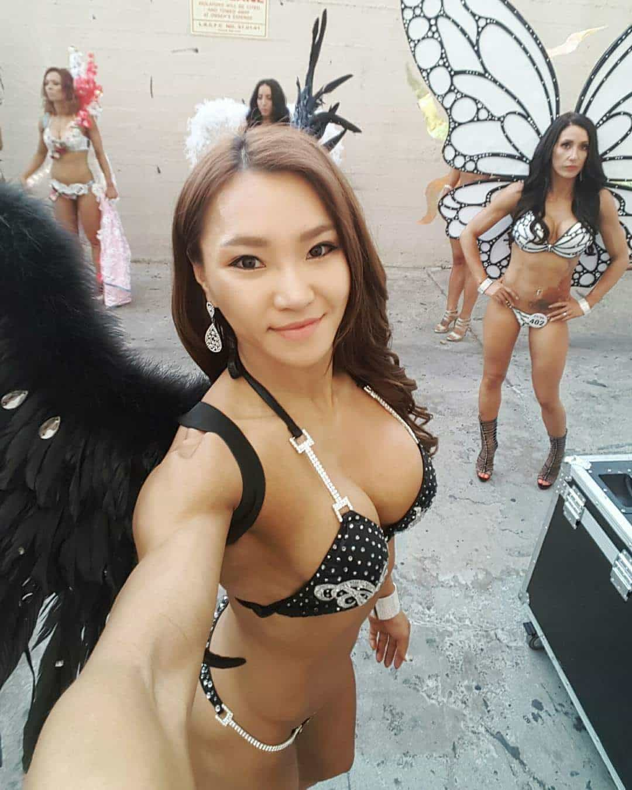

Korean culture is essentially a hybrid culture: a mix between traditional values from Confucianism, Buddhism and Christianity, and Western consumerism and liberal democracy. What is also different, besides the much lower levels of obesity, is that Koreans—like other East Asian populations—are less politically correct, and although prone to polite discourse rather freely speak their minds, both in public and private.
Unlike Western women who tend to have a huge discrepancy between what they say and do. They often stress that they like humor and a pleasant personality, but we know that social status, specific looks, behavior, and money beat both.
Recently, an article on the Korean news site Koreaboo conveyed messages from 26 girls about which three things that they prefer in guys. Since they are anonymous, the claims are even more honest and substantial. Here are some of the quotes, and what we can learn from them.








Visuals and personality/manners are generally the most important things based on these accounts. Less of the cocky confidence and more of the well-groomed nice guy, compared to the West. Since South Korean women are on average 160.4 centimers, albeit somewhat taller in the younger ago cohorts, and often thin, most guys are naturally bigger and taller. You don’t have to be really big, just taller and bigger. I had a pretty Korean girlfriend who was 5.5 and 110 lbs, whereas I am 5.6 and 160 lbs.
But Korean girls love low body fat and nice clothes, so don’t miss out on that if you are interested in dating a better-than-average-looking Korean girl. While South Korean men are associated with the thin and androgyne K-pop look, and the bulk of guys having weak game, fitness is spreading at an astonishing rate. Thus expect more females to have silicone implants and guys to be cut and jacked. If you have Instagram you’ll notice.


I see that as a constructive response to smartphone-using spoiled females and somewhat unfavorable sex ratios. Korean guys have to look and act more like the K-pop celebrities, the popular fitness enthusiasts, or somewhere in between. Otherwise they end up as incels or are left with the ugliest girls.
The traits that Korean girls desire could easily transcend the national borders of South Korea, especially if one realizes that these phenomena emerged in the West in the first place. I think that what these young women are asking for are pretty much the same things as all females do.
For sure, there are palpable cultural differences in some regards, and Western women in general neither wish for, nor deserve good manners until proven worthy of such behaviors. Nevertheless looks, manners, personality and at least decent levels of money are a good start. If you’re not well-educated, make sure to have at least solid common knowledge acquired through self-education (autodidacticism). It can mean everything from knowing the basics of politics and economy, to carry heavy things for a petite girl.
The local and the global are becoming intertwined, at least in the first world, as a consequence of homogenization. It is the same ideals and corresponding approaches that men and women are asking for and are committed to. Men in South Korea are not much different from American, Canadian, British, French, Australian or Swedish men, and women in other countries want essentially the same things, although with slight variations between nations and cities, and of course, individuals.
The members of the fairer sex want a guy who dresses well, has good hygiene, is fit, can conversate, and look at least like he tries his very best in regards to behavior and career goals. Some of these things can be drastically altered or improved, so don’t miss out on those before you blame your genes, go MGTOW, and give up.
For more of William Adams’ material, check out his website Syncretic Politics.
Read More: What Modern South Korea Is like